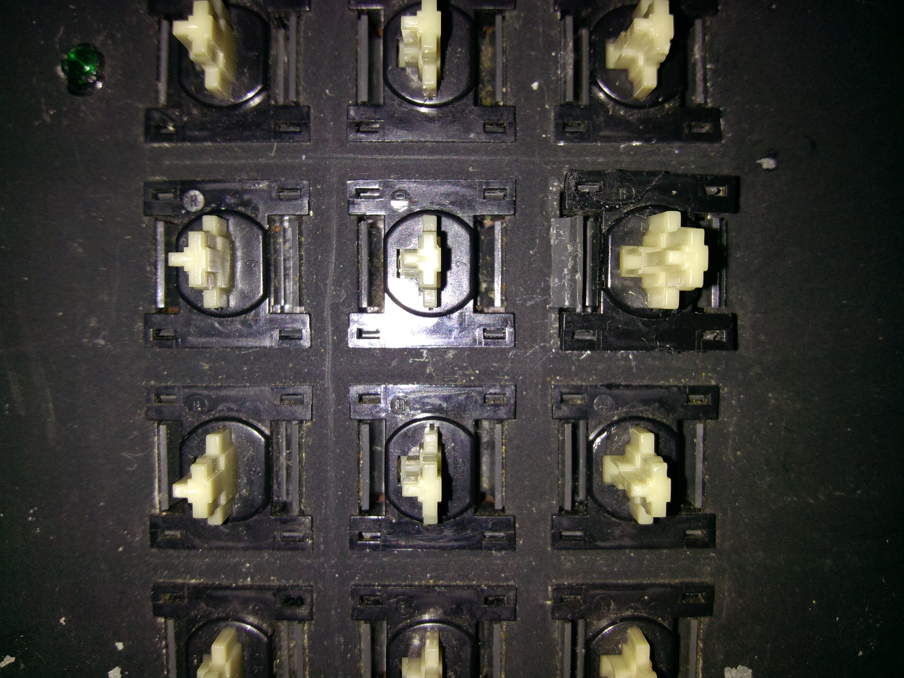

Several keys on my Model III keyboard weren't working. The problems were due to a combination of a few broken tracks and a few dirty key switches which needed cleaning. I took some photos while I cleaned the key switches.
Apparently there are different types of Model III keyboards. I suspect my keyboard might be an earlier type, because some of the other information on the Internet shows a different construction.
I took the key caps off all the switches and gave the keyboard a good clean. The photo below shows part of the numeric keypad.
I then located a problematic key and desoldered its 2 terminals from the underside of the keyboard using a soldering iron and solder sucker.
Now the tricky part is removing the key from the keyboard. There are 2 plastic clips on either side (left and right) of the central white post that both need to be pushed in, at the same time you need to pull the key out. The photo below shows a key (2nd row from top, rightmost) which I was putting back in after cleaning. You can see the left-hand clip sticking out from the hole in the keyboard.
Removal of the key is made considerably more difficult if you don't manage to remove all the solder from the terminals. It's also very easy to break the thin black plastic lip of the key while you're lifting it up. In fact, if you look closely at that key in the photo, I had actually cracked the top lip of the key and super-glued it back on.
Once the key is removed, it will look like the one in the photo below.
This key actually comes apart into the pieces shown in the photo below.
The 2 photos below show the part of the switch which are relevant for cleaning.
I read on the Internet that a business card dipped in alcohol could be used to clean the switch. It wasn't immediately obvious to me what part should be cleaned, but I found inserting the card as shown in the photo below did the job. I used methylated spirits.

Putting the key back together is obviously a reverse of how it was taken apart.
If a key still doesn't work after cleaning, and you've verified it's not a broken track problem, then consider swapping it for one of the keys on the numeric keypad if you cannot source a suitable replacement.
Broken tracks can be fixed with wires: